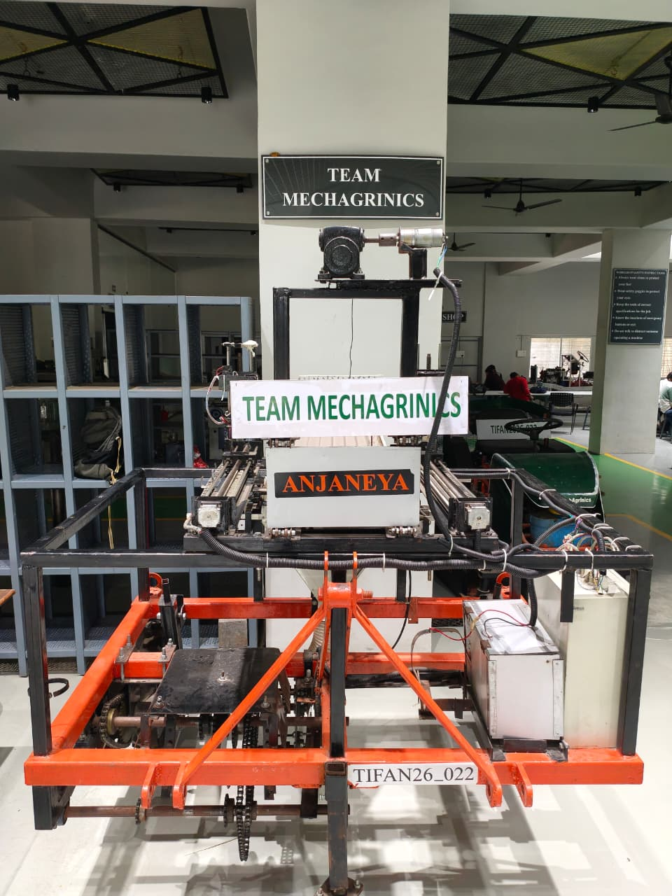

Revolutionizing vegetable farming with automation, precision, and sustainability.
Learn MoreThe Single Row Multi-Vegetable Transplanter is an advanced agricultural machine developed to automate the transplanting of vegetable seedlings in a single row with high precision. Conventional transplanting methods require significant manual labor, resulting in inconsistent spacing, uneven planting depth, and increased operational costs. This transplanter streamlines the entire process by integrating automated sapling feeding, soil opening, seedling placement, and soil covering into a single efficient workflow.
Designed for compatibility with a wide range of vegetable crops, the machine ensures uniform planting, minimizes root damage, and improves crop establishment. Its compact design, adjustable settings, and reliable performance make it an ideal solution for modern farmers seeking higher productivity, reduced labor dependency, and sustainable agricultural practices.
Below is the working prototype of our Single Row Multi-Vegetable Transplanter, engineered to deliver accurate, efficient, and automated transplanting for various vegetable crops.

Automates sapling feeding, soil opening, planting, and soil covering with minimal manual intervention.
Suitable for transplanting various vegetable seedlings in a single row with adjustable settings for different crops.
Maintains consistent planting depth and spacing, ensuring uniform crop growth and better field management.
Designed to minimize damage to delicate roots and stems, improving transplant survival rates.
Significantly lowers labor requirements while increasing transplanting speed and operational efficiency.
Promotes precision farming by reducing wastage, improving resource utilization, and supporting environmentally friendly agricultural practices.